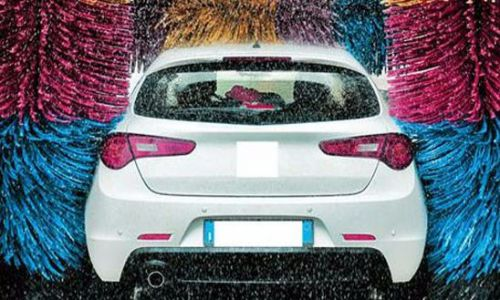

400-500-8888
时间：2016-04-21

文/蓝鲸TMT 李雪
近日，有报道称O2O洗车平台e洗车已经濒临倒闭边缘，来自滴滴的CEO张晶已于今年5月离职，外地分公司全部撤销，约上百名员工被裁或主动离职，员工人数最多时为160人左右，现在仅剩20余人。
仅剩的员工负责维持技术、客服、财务以及到店业务的运营，据了解，e洗车已于上月初关闭了上门洗车和上门保养业务，其APP页面显示为“系统维护升级中”，目前只有到店洗车能够继续使用。
根据速途研究院发布的《2015上半年汽车后服务O2O报告》数据显示，2015年上半年汽车后服务O2O市场中，e洗车的市场规模占比达到了21%，仅次于占比41.1%的e代驾。
汽车后服务O2O市场中占比第二的e洗车，怎么就濒临倒闭边缘了呢？其原因主要有2点：
1.洗车虽然是汽车后市场中频次最高的服务，但客单价也是最低的。
由于洗车是一项高频、标准化的服务，成为了者和者严重进入汽车后服务O2O领域的最佳入口。但与此相对的是，洗车服务的客单价极低，客单价均价大致为30元每单，去除掉房屋租金与人工成本外，基本是不赚钱的，上门洗车虽然节省了房屋租金这项成本，但却大大增加了时间成本。
为此，很多像e洗车一样的O2O洗车服务平台企图通过低价来抢占市场，至于盈利问题则寄希望于将用户转化至汽车保养、美容等后续服务中，但e洗车的这一转化率仅为5%~6%，效果并不理想。
2.烧钱模式支撑业务发展，但融资没跟上。
当一个新领域诞生时，人们对其认知度极低，并且原有的用户习惯很难在一时间就可以改变，很多商家都不约而同的选择了烧钱、补贴等措施来培育市场。烧钱不要紧，怕的是引火上身。洗车O2O服务为了迅速打开市场、培育用户习惯行为，同样采取了烧钱模式，“免费洗车”、“一元洗车”、“三元洗车”等优惠补贴活动遍地开花，e洗车更是打出了“一分钱洗车”的口号。
面对如此大力度的烧钱补贴，用户开心了，甚至有用户表示，两个月大概洗车7次，只花了5元钱，还是邀请好友送的礼金。但洗车O2O服务平台似乎并不好过，e洗车CEO张晶表示，每个月洗车补贴就要烧掉六、七百万，以此推算，e洗车3月获得2000万美元融资，如今已烧掉过半，不知当资金消耗殆尽时，是否会正式宣布关门。
e洗车濒临倒闭 刺破车后O2O市场的泡沫
据国家统计局网站公布的《2014年国民经济和社会发展统计公报》的数据显示，2014年年末全国民用汽车保有量达到15447万辆，相比去年同期增长12.4%。
汽车后市场的巨大的市场容量，也将使其成为下一个万亿市场。据中国连锁经营协会发布的《2014中国汽车后市场连锁经营研究报告》数据显示，中国汽车后市场规模已经达到6000亿元，相比于2013年增长了30%，预计到2018年，汽车后市场规模将突破万亿，未来10年市场规模有望达到5万亿。
由于具有逐利性的特点，众多资本纷纷涌入到O2O汽车后市场领域，据不完全数据统计显示，2014年，O2O汽车后市场领域的投资、融资案例多达67起，为2013年的10倍，总金额约为百亿元。
不论从什么角度看，对于投资者和创业者来说，汽车后市场都是一块美味的大蛋糕，事实也确实如此，很多创业项目也从中尝到了甜头。e洗车2014年11月上线，上线3个月后，用户数高达上百万，合作商家3000家，日均订单突破1.5万，峰值达到3万，并于今年3月，获得来自平安创投的A轮2000万美元融资。
刚刚获得融资不到7个月，号称“全国最大的移动洗车服务平台”的e洗车，如今却被曝出濒临倒闭的边缘，整个行业的泡沫也正逐渐显现出来。
e洗车并不是O2O车后市场领域中最先倒下的一个。今年7月，上门洗车服务平台“车8”发出通告称由于业务调整停止上门洗车业务。此前，云洗车、嗒嗒洗车等也已悄悄关门。
e洗车濒临倒闭 e保养还远吗？
此前，曾有多名业内人士预计，今年下半年将迎来O2O倒闭潮，最热的汽车后市场领域也是如此。在汽车后服务O2O市场的火爆浪潮下，洗车O2O、保养O2O等领域迅速沸腾，仅在短短的1年时间内，就孵化了数百家汽车后服务O2O企业，但如今，汽车后服务O2O市场的泡沫正在逐渐褪去，市占比21%的e洗车已经濒临倒闭，e保养还远吗？
这些质疑声，都并非空穴来风，原因如下：
1.客单价虽高于洗车O2O，但是保养O2O服务频次较低。洗车O2O客单价均价仅为30元左右，且用户对洗车服务的需求频次约为每月2~3次，导致扣除成本后利润所剩无几；保养O2O的客单价均价约为300元左右，虽远远高于洗车O2O，但频次却仅为每年2次左右，这也导致获取用户的难度加大。
2.保养O2O价格不透明，4S店更让用户放心，这是个消费习惯的问题。为了给传统4S店的市场造成冲击，很多保养O2O打出了性价比这张牌，但是4S店提供的质量保障以及优质的服务更让用户放心，加之汽车保养毕竟不是一个高频次的服务需求，价格因素的作用就减弱了。
打性价比的汽车保养O2O企业同样面临着价格质疑。多数汽车保养O2O企业都宣称价格比4S店优惠20%~50%，但据北京商报报道，王女士在汽车保养O2O平台上更换更换空调滤芯的价格甚至高过4S店。如此看来，故意虚报、宰客等现象也不仅仅发生在4S店身上。
3.保养O2O领域同质化企业较多，洗牌在即。洗车O2O、保养O2O、二手车O2O等作为切入汽车后服务O2O市场的入口，有无数创业者涌入其中，在每个细分领域中都有数家企业去争夺，比如保养O2O领域中有：e保养、养车宝、典典养车、车点点、卡拉丁、易快修等，服务内容同质化严重，模式简单容易复制，且e保养并没有抢占到大份额的市场占有率。此外，汽车后市场的洗牌，现在已经初露端倪。
写在最后：
e洗车、e保养、典典养车、呱呱洗车、TT快车等来自汽车后市场领域的O2O创业项目犹如雨后初笋般出现，其中有数十家O2O汽车后市场创业项目已经获得了天使轮、A轮融资、B轮融资。但随着市场竞争的加剧，汽车后服务O2O市场已经进入淘汰赛阶段，而排名靠后的O2O企业将面临倒闭的危险，或将陷入“C轮死”的境遇。
Copyright © 2015-2016 Maker Cloud 创客云 版权所有粤ICP备32852599-1


 在线咨询
在线咨询 在线咨询
在线咨询 400-500-8888
400-500-8888